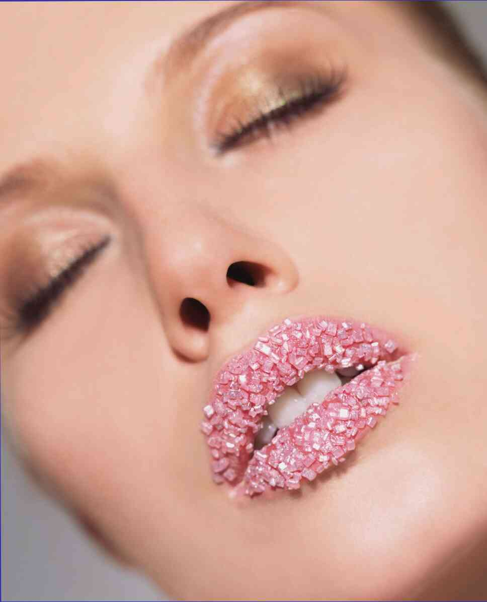

El ejercicio de estos conocidos por todos sin duda alguna, los movimientos que se ejecutan con este, hacemos a menudo inconscientemente. Incluso varias veces al día. Por qué ocurre esto? Debido a que nuestro cuerpo se esfuerza por ayudar a permanecer en el tono, no "derramarse", estar en forma y delgado.
El primer ejercicio de muchos de nosotros realizamos, de hecho todas las mañanas. El segundo ejercicio que muchos practican después de cada comida. El tercer ejercicio se puede realizar prácticamente durante todo el día, ya que sólo piense en él.
Además, trate durante el día se mueven más, no permanecer mucho tiempo en un lugar, airear el local, para saciar el cuerpo de aire fresco.
El primer ejercicio habitual de la mañana potyagivanie. Realizar su posible directamente en la cama después de despertar. Ahora usted puede en cualquier otro momento del día, cuando sientas ese deseo.
Posición inicial : acostado, la espalda y el cuello rectos, la mirada hacia arriba, antes de la una. Las piernas están cerca, estirados. Los brazos extendidos detrás de la cabeza. Antes de potyagivaniem gire los dedos de los pies hacia sí mismo y tire varias veces una una pierna, la otra.
Por lo tanto, usted pasará de la prevención contra los calambres, que a menudo se producen en los pies al largo de la inmovilidad. Ahora, empuje hacia adentro el mismo vientre y tire de la parte superior del tronco hacia brazos extendidos, la parte inferior del torso hacia la planta de los pies. 3-5 vez.
El segundo ejercicio , muchos realizan después de la toma de alimentos como medidas para mejorar más rápido y mejor ser los nutrientes. Este ejercicio se recomienda realizar periódicamente para aquellos que quieren bajar de peso y mantener su figura en el formulario.
Realizar, y como la primera, si lo desea, en cualquier momento del día. Posición inicial : de pie, la espalda y el cuello rectos, los hombros raspravleny, la cabeza se extiende hacia arriba, la mirada antes de la falla. Levante a través de la parte de la mano hacia arriba, paralelos entre sí. Se puede conectar la palma de la mano en la cerradura.
Ahora llene el estómago y empieza a tirarse hacia arriba tanto como pueda. Mantén la posición por unos segundos. Baje mis manos a través de la parte de abajo, relájate. Basta con realizar estos estirosopladoras cuerpo de movimiento 3 veces.
El tercer ejercicio se puede realizar en cualquier momento del día, cuando piense en él. Realizar en posición de pie, sentado, acostado, de pie, a cuatro patas. En el transporte, en ese momento, cuando vas por la calle, sentado en el ordenador, ver la televisión.
El ejercicio es una reminiscencia de la respiración abdominal o un ejercicio vacío. Cuando se ejecuta activamente apertura y abdominal. Tomando la posición en la que usted hacer el ejercicio más cómodo. Estas disposiciones pueden variar.
Al inspirar naduvaete vientre, durante la espiración vtyagivaete en la mayor medida posible y pripodnimaete hacia arriba, desplazando hacia arriba el diafragma. Queda en una posición tal en la medida posible. De nuevo realiza una respiración profunda, vypyachivaete vientre, repite el ejercicio.
Realizar su posible una vez y entonces para mantener el estómago arrastrado el mayor tiempo posible. Es la primera versión de la realización de los ejercicios. La segunda opción : la respiración correspondientes al estómago en el unos segundos. Entonces realiza su 3 veces.
Una tercera opción : realiza el ejercicio sin respiración. La inspiración - la protrusión del abdomen, a la respiración - retracción. Entonces la cantidad de movimiento 3-5.
La respiración en los ejercicios tranquila, pausada - lento larga respiración profunda y lenta de largo la exhalación.
Es importante. Ten cuidado de ser de un ejercicio a las personas con enfermedades crónicas, las personas que tienen problemas con la presión. No siga demasiado profundas de nuestra demasiado larga demora de la respiración, para de no provocar un aumento de la presión.
El artículo tiene un educativo y la naturaleza. La consulta del especialista, se recomienda.
Estimados lectores, suscríbete al canal y entra en él con regularidad para leer los nuevos artículos. Gracias por la atención a este. Marque, por favor, y compártela con los demás es importante para el desarrollo del canal.
Deja un comentario